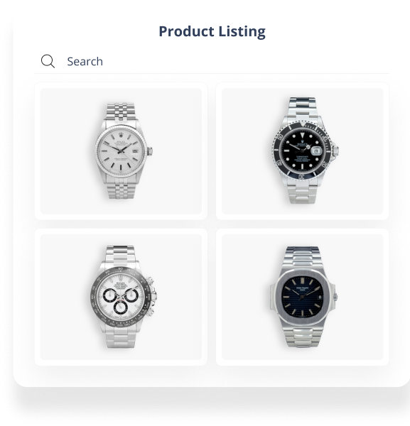
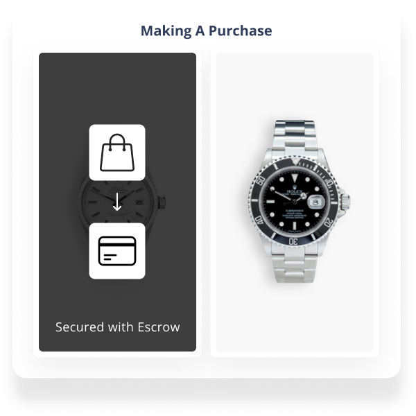
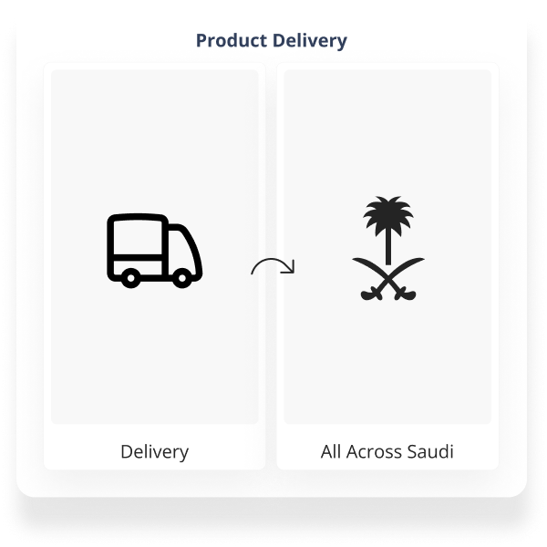
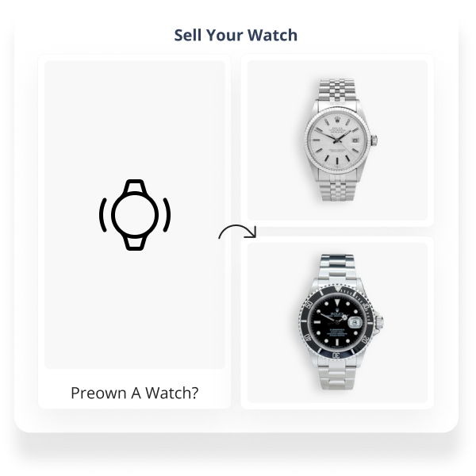

{{ "explore_chrono.label" | translate }}
{{ "explore_chrono.browse_para" | translate }}

{{ "explore_chrono.secure_para" | translate }}

{{ "explore_chrono.get_it_para" | translate }}

{{ "explore_chrono.sell_para" | translate }}
